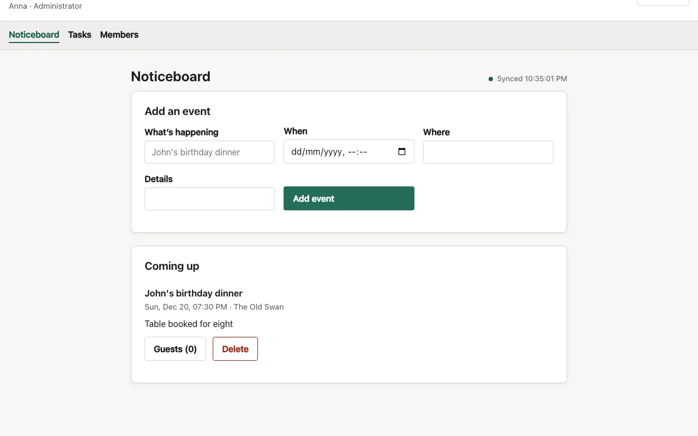
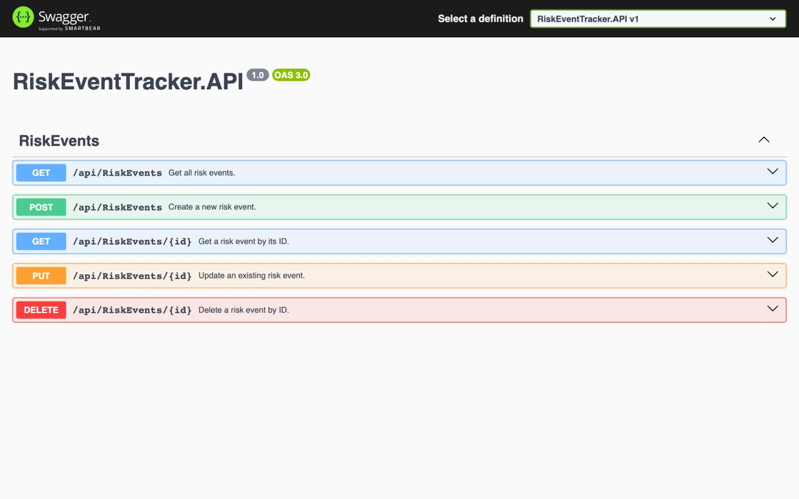
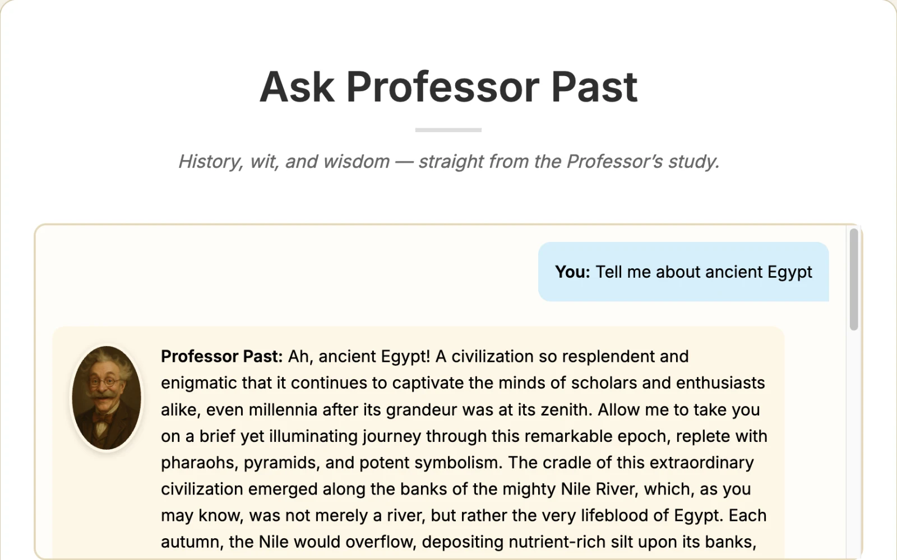

Things I make
Everything I’ve built that I’d happily talk through.
Threshold
A clearer view of what moving could cost.

Argus Risk
Every number shows where it came from and how old it is.

Flowtime
Breaks that match how long you actually focused.

Home Secretary
A household coordination prototype, built for my software engineering coursework.

Risk Event Tracker
A tested C# Web API for managing risk events.

Ask Professor Past
History you can talk to. Version 1; I’m rebuilding it.
